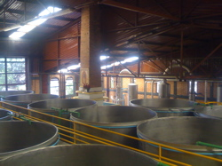

My lovely wife is spending the month of May in Guadalajara, Jalisco, Mexico working in an albergue which serves a local hospital.
An albergue is sort of an inn or hostel, and in this particular case it houses people who have traveled across Mexico to seek medical attention in Guadalajara. They charge a very small fee for housing, meals, shower, and laundry facilities. In addition they provide some medicine and care. Many of the workers there help by simply being social with their guests. There are many families there waiting for the outcome of an operation or procedure, and providing someone to talk to helps keep spirits alive.
I slipped down to Guadalajara for a few days to visit and see the sites. Caroline took me on a quick tour of the albergue and the hospital it serves, then we headed into the center of town (Centro) and looked in shops and bought strange grapefruit sodas and felt deliciously foreign. I think we saw maybe four Americans on the trip. (Which is fine. I see those jerks all the time.)
Guadalajara is a big, bustling, noisy, dirty city. The buses are crammed full of people. The traffic is terrible. There is intense wealth and poverty coexisting on the same city block. I loved it.
There is a lot of public art scattered around the city. Even in the (very American) shopping mall we spent an afternoon in (surreal) had lots of sculpture in between the department stores and on the stairs.
In the Tlaquepaque neighborhood (a small town that got engulfed by ever-growing Guadalajara, now an arts district) we saw loads of art; local, regional, and international; and piles of leather work and perhaps the most beautiful restaurant I’ve ever seen.
We took one day trip out to Tequila to visit the Cofradia Tequila factory. As you approach Tequila, the first sign of the town are the fields of blue agave (from which tequila is made). When I say “blue” I mean “wow that plant is really blue”. It’s the strangest thing to see these spiny blue plants against the brown landscape. It looks like the earth bristled up a blue, spiky protest against the sky, and then years later people learned you could get drunk off it.
I returned home mid-week to dull, grey, cold Portland weather deeply regretting that I didn’t stay longer.
(And yes, our Economic Stimulus checks were cashed and promptly exchanged for pesos and spent on bus fare, taxis, food, gifts, tequila, and tequila)
 This is an interesting set of recommendations on my iTunes receipt.
This is an interesting set of recommendations on my iTunes receipt.